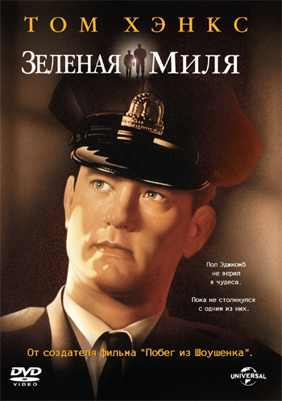
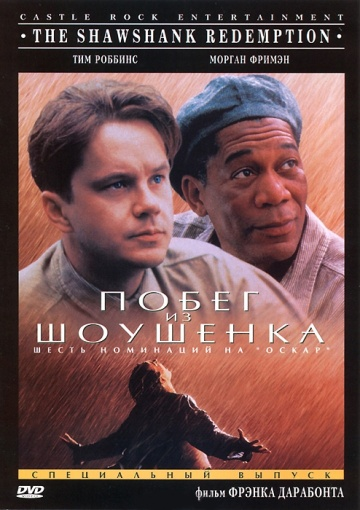
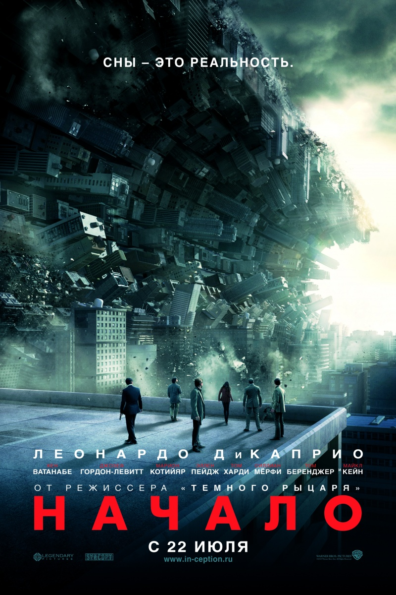

Зеленая миля
Двухметровый необразованный Джон Коффи обвиняется в страшном преступлении — изнасиловании и убийстве двух маленьких девочек — и приговорен к смерти на электрическом стуле. Его сажают в камеру смертников в блоке “Зеленая миля”. В ожидании смерти Джон излечивает начальника блока Пола от тяжелой болезни.Когда выяснилось, что он обладает невероятной магической силой, угрюмые надсмотрщики постепенно прониклись симпатией к неуклюжему верзиле, но час смертной казни все ближе, и сделать уже ничего нельзя. Побег из Шоушенка
«Побег из Шоушенка» - это история заключенного, получившего пожизненный срок. Успешный банкир Энди Дюфрейн обвинен в убийстве собственной жены и ее любовника. Оказавшись в тюрьме под названием Шоушенк, он сталкивается с жестокостью и беззаконием, царящими по обе стороны решетки. Каждый, кто попадает в эти стены, становится их рабом до конца жизни. Но Энди, вооруженный живым умом и доброй душой, отказывается мириться с приговором судьбы и начинает разрабатывать невероятно дерзкий план своего освобождения.Не потерять надежду, остаться в жесточайших условиях человеком, осуществить задуманное... И главный вопрос: удастся ли этот побег века? Начало
Главный герой фильма Дом Кобб, является уникальным в своем роде специалистом по кражам секретов из глубин человеческого подсознания во время сна, когда мозг человека является наиболее уязвимым. Редкая способность Кобба сделала его желанным игроком в предательском новом мире корпоративного шпионажа. Она также сделала его международным преступником и стоила всего, что он любил. Теперь Коббу предоставляется шанс на искупление. Последняя работа может вернуть его к обычной жизни, однако для этого необходимо выполнить необычайно трудное задание. Вместо идеального ограбления Коббу и его команде необходимо совершить обратное – не украсть идею, а поместить мысль в подсознание жертвы. Если им удастся, это будет безупречное преступление. Однако никакое планирование и опыт не могут подготовить команду к схватке с опасным врагом, который, казалось, предугадывает каждый шаг. Бойцовский клуб
30-летний безымянный офисный клерк ведет ничем не примечательную жизнь, ездит в командировки и страдает вещизмом. Чтобы избежать бессонницы, он по совету врача начинает посещать группы смертельно больных пациентов, чтобы осознать ценность жизни. В одной из поездок клерк знакомится с брутальным изготовителем мыла Тайлером Дерденом, которому чуждо все материальное. Вместе они придумывают бойцовский клуб «Разгром», бросив таким образом вызов людям, считающим работу главным делом жизни.

Достучаться до небес
Главные герои фильма, робкий неприхотливый Руди и решительный Мартин, знакомятся в больничной палате «смертников». Жить обоим осталось не более недели. Заправившись текилой и закусив лимонами, они решаются осуществить свои заветные мечты и отправляются на море, угнав припаркованный на стоянке больницы классический Мерседес. Да вот только в багажнике автомобиля миллион долларов, в бардачке пистолет, о которых они и не подозревали. Вскоре их личности привлекают внимание полиции, общественности, ну и естественно владельца угнанной машины с приличной суммой денег в багажнике. Весь путь их преследуют гангстеры и полиция, но, несмотря ни на что, они добираются до морского пляжа. Море, которое никто из них никогда раньше не видел. Им удалось «достучаться до небес»!